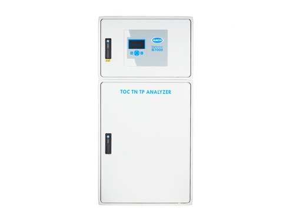

CL17 - Analyser for Chlorine
Based on advanced colorimetric chemistry the analyser provides a fast, reliable method of determining total or free residual chlorine. The analyser inlcudes a one-month supply of reagents, installation and maintenance kits, and an instruction manual. Power cord must be ordered seperately.Read More video

CL17 - Colorimetric Chlorine Analyser
The CL17 analysis method is not affected by changes in chlorine concentration, sample pH, temperature, flow or pressure, thus offering more reliable and accurate measurement with less operator interventions. The CL17 is also suitable for permanganate residual measurements.Read More video

CL10 sc - Amperometric Chlorine Analyser
The CL10 sc reagentless chlorine analyser allows for real-time control of disinfection processes by providing continuous readings that indicate when treatment conditions have changed. Options for all analysers include multiple stream analysis (1-8 streams) reducing cost per sampling point.Read More video

Phosphax sc - Phosphate Analyser
Phosphax sc Phosphate Analyser offers a wide measurement range for a variety of wastewater and drinking water applications with detection limits as low as 0.05 mg/L and response time of less than five minutes including sample preparation.Read More
5500 sc - Silica Analyser
The 5500 sc Silica Analyser requires only two liters of reagent for the analyser to perform unattended for up to 90 days; twice as long as the Series 5000. The industry’s only pressurised reagent delivery system eliminates the frequent maintenance associated with pumps.Read More video

NA5600sc - Sodium Analyser
NA5600sc monitors for low sodium levels with reliable online measurement technology and built-in automatic features like auto calibraion and automatic electrode reactivation to save you process time. To maintain optimum response time and accuracy, the NA5600sc analyser provides automatic electrode reactivation.Read More video
SP510 - Hardness Monitor
The RTC-N system optimizes nitrification processes by adjusting DO concentration in real time through continuous measurement of ammonia load, allowing you to maintain consistent effluent ammonia values and enhance your DO control system. Use the RTC-ST and RTC-SD systems to control polymer dosing in real time, helping you significantly reduce your polymer dosing costs while also increasing your biogas yield.Read More

EZ7300 - Microbial Load ATP Analyser, 1 stream, Modbus RS485
The EZ7300 Series monitor total bacterial and pathogen load in water by measuring portions of ATP (adenosine triphosphate) of any type of microbial microorganism present in the water sample i.e. bacteria (pathogenic and non-pathogenic), microalgae and protozoa.Read More video

EZ Series - Total Nitrogen Analysers
The EZ Series Online Analysers offer multiple options to monitor Total Nitrogen in water. Typical applications are wastewater and surface water. Options for all analysers include multiple stream analysis (1-8 streams) reducing cost per sampling point.Read More video
EZ7600 - Total Nitrogen + Total Phosphorus Analyzer, 1 stream, Modbus RS485
Traditionally, compliance of waste water effluent with local discharge regulations is assessed by a number of wellknown nutrient parameters, such as nitrate (NO₃-) and soluble phosphate (PO₄3-) concentrations. The EZ7600 Series use an analytical mainframe specifically developed for the combined, automatic measurement of Total N and P in water samples.Read More video
AS950 - Portable Sampler
Lightweight design, low power requirements, and easy mobility make it ideal for field applications, including storm- water, environmental, or industrial pre-treatment. Controller is equipped with standard memory and USB allowing all data to be logged and transferred via USB driveRead More video

AS950 All Weather Sampler
The AS950 AWRS is a robust, weather resistant sampler with an integrated refrigerator for applications where temperature control is required for sample preservation. Hach’s AWRS cabinet is designed to withstand harsh environments, while maintaining sample integrity.Read More video

Hach BioTector B3500s TOC Analyser
Effluent TOC monitoring made easy : Semi-annual reagent replacement and seamless integration with the Hach sample homogenisation unit, make the B3500s the easiest solution for regulatory TOC monitoring in municipal wastewater.Extended reagent and maintenance intervals : Every six months reagent replenishment, semi-annual calibration and basic preventative maintenance allows you to focus on what matters most.Read More video

Read More video
Hach BioTector B7000 TOC/TN/TP Analyser
Improve wastewater treatment process : Capture changes in water quality with a direct analysis of Total Organic Carbon (contamination), Total Nitrogen and Total Phosphorus in the most challenging samples. Knowing TOC + TN and TP allows you to decrease utilities usage and related costs. TOC levels are often correlated to lagging water quality metrics such as Chemical Oxygen Demand (COD) and Biochemical Oxygen Demand (BOD).Read More video
Polymetron 9586 sc - Oxygen Scavenger Analyser with Profibus Communications, 100 - 240 V AC
Online analyser for monitoring hydrazine and carbohydrazide oxygen scavengers. A broad range of product options made to work together as flexible solutions meet your unique needs.Read More

AF7000 - Streaming Current Monitor
For optimization of coagulation processes in drinking water, the Hach AF7000 Streaming Current Monitor was designed with serious durability in mind, utilising an industrial sized motor and having solid 316 Stainless Steel castings.With an industry leading sub 1 second speed of response to source water changes, the AF7000 provides operators instant knowledge and immediate control to any potential situation or needed chemical dosing adjustment.Read More

SWAS Panels (Hach’s Steam and Water Analysis System)
Hach’s Steam and Water Analysis System (SWAS) measures degassed cation conductivity, silica, and sodium, and helps to protect and reduce the downtime of your plant. This comprehensive approach also includes a steam reduction unit as well as preinstalled hydraulic and electrical connections for standard fittings and electrical I/O signals.Read More
Real Time Controls (RTC)
The RTC-P System optimizes chemical phosphorus removal by adjusting chemical dosing in real time through the continuous measurement of phosphate concentration and flow, allowing you to maintain consistent effluent phosphorus values and enhance your chemical phosphorus control system for unprecedented chemical savings.Hach’s RTC-N/DN system is designed specifically for oxidation ditches and sequencing batch reactors.Read More video
Real Time Controls (RTC)
The RTC-P System optimizes chemical phosphorus removal by adjusting chemical dosing in real time through the continuous measurement of phosphate concentration and flow, allowing you to maintain consistent effluent phosphorus values and enhance your chemical phosphorus control system for unprecedented chemical savings.Hach’s RTC-N/DN system is designed specifically for oxidation ditches and sequencing batch reactors.Read More video
Real Time Controls (RTC)
The RTC-P System optimizes chemical phosphorus removal by adjusting chemical dosing in real time through the continuous measurement of phosphate concentration and flow, allowing you to maintain consistent effluent phosphorus values and enhance your chemical phosphorus control system for unprecedented chemical savings.Hach’s RTC-N/DN system is designed specifically for oxidation ditches and sequencing batch reactors.Read More video